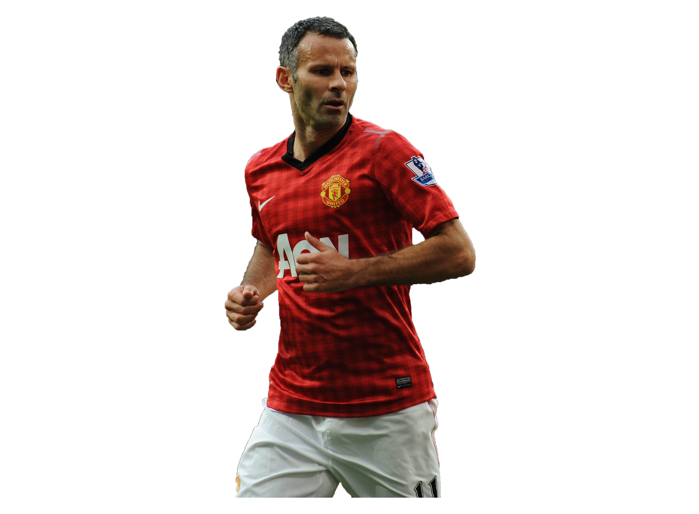

LeagueLegends2
League Legends

Ryan Giggs is Manchester Uniteds all-time
leading appearance maker and is the most decorated British footballer.
Recently, he was also the manager (interim manager for all you pedants)
of Manchester United, the only club he has ever played for. But there are
some things about the Welsh wing wizard that not many are aware of.
- Next Page
- Back